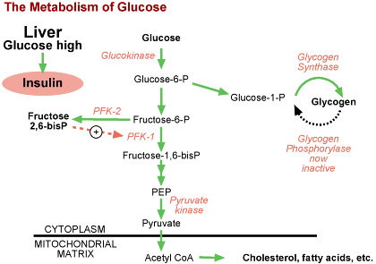

The Biology Project Home > Biochemistry > Regulation of Carbohydrate Metabolism > Problem Sets Regulation of Carbohydrate Metabolism Problem SetQuestion 1: Liver Enzymes Affected by InsulinTutorial to help answer the questionInsulin facilitates energy storage in liver. Which enzymes of carbohydrate metabolism are coordinately regulated in liver in response to insulin signaling?
Tutorial Six enzymes shown in red (including all five listed in question) are affected by insulin, via three different mechanisms. All but glycogen phosphorylase are stimulated. However, note that PFK-2 is one activity of a bifunctional enzyme - the other "half" of this two-headed beast will come up later in this tutorial. Problem 1 | Answer | Problem
2 The Biology Project Home > Biochemistry > Regulation of Carbohydrate Metabolism > Problem Sets The University of Arizona March 16, 2001 Revised: August, 2004 Contact the Development Team http://biology.arizona.edu |